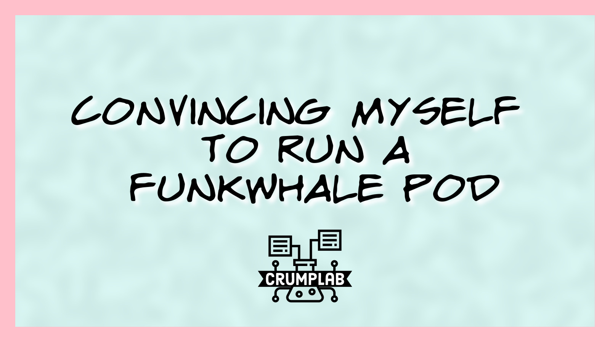

Convincing myself to run a Funkwhale pod
funkwhale
activitypub
audio
music
Funkwhale is an audio platform thing that supports activitypub. Collecting notes about it.
Expertise: 0 Usefulness: ? Audience: notes to self
I love music: listening to it and making it. I’ve had increasingly less time for music, and am trying to find more time for it. So, as a part of learning mastodon I created an account for my music interests:
https://bbs.crumplab.com/@homophony
It’s only been a week, but I’m having lots of fun connecting with music makers on the #fediverse. This could mean more overall music, which would be great!
When I first tried mastodon a week ago I had no idea about activitypub, or the broader fediverse. I didn’t realize there are many different “platforms” compatible or semi-compatible with the activitypub protocol. This means that user accounts on one platform like mastodon can interact with user accounts on another platform like pixelfed (open-source version of instagram for picture sharing). There a lots of platforms in the fediverse, including funkwhale for audio and music sharing.
Funkwhale notes
Using this space for note collection on funkwhale.
Main site: https://funkwhale.audio
Funkwhale forum: https://forum.funkwhale.audio
Funkwhale on mastodon: https://fosstodon.org/@funkwhale
Dashboard of Funkwhale pods https://network.funkwhale.audio/dashboards/d/overview/funkwhale-network-overview?orgId=1&refresh=2h
Dev and issues: https://dev.funkwhale.audio/funkwhale
Spinning up
Installation dev instructions https://docs.funkwhale.audio/installation/
Other instructions, possibly helpful for a droplet setup.
https://geek-cookbook.funkypenguin.co.nz/recipes/funkwhale/
Leaving this for another time…back.
Start trying
How long will this take? I was hoping to do this all on digital ocean. Will try develop instructions. Starting at 6:42.
Ok, that was super easy.
I created a new Ubuntu droplet on digital ocean. Logged into the terminal by website. I followed these steps from the quick install.
sudo apt-get update
sudo apt-get install curl
sudo sh -c "$(curl -sSL https://get.funkwhale.audio/)"Made an A name to create a new subdomain for my pod. Pressed enter a couple times to say YES during install. Took about 15 minutes, mostly waiting. Now I have a funkwhale pod. huh.
What do I do with this?

musicbrainz
- downloaded the musicbrainz app
Might have to use this for metadata? After making an account over here, I realize this is mostly for tagging .mp3 libraries of existing music so it is easy to upload with tags.
I could add my own artist info here I guess. Not sure how useful it will be yet for adding metadata around individual tracks I create. It could be very useful, or not. Need to learn more about associating new music audio files I make with all the necessary metadata.
Issue collection
I have destroyed the droplet.
Made my admin account “homophony”, which worked all fine and dandy. However, this meant that I couldn’t use that handle to create channels and share under that artist name.
musicbrainz is interesting and complicated. I should consider listing exist discography there. It seems to be mostly for uploading digital music collections, which is not what I’m interested in doing. Funkwhale could be altogether more than I need it for. Still…curious.
Restarted the droplet…waiting through the install.
Got messed up with the certbot, needed to change the A name record so my subdomain pointed to the droplet.
Creating a channel and frustrations
I spent a couple hours getting the pod up and running on digital ocean, and most of that time was me making little mistakes.
After I got the pod fully up and running I made sure my admin name was NOT my artist name. Then, I made an artist channel to share some tracks. There is a choice between music channels and podcast channels. I’m not planning to do any podcasting here, but the functionality for that looked good (it may integrate with podcasting services for indexing).
Creating a music channel was easy, and uploading tracks was easy. And, it seemed easy to share the link to the channel so other people could listen to it. I could listen to the tracks, but for a whole day anytime I accessed the funkwhale channel as a “non-logged in” user, I got a spinning wheel. I had to allow unauthenticated users access to the api, and that seemed to have worked? I’m testing right now.
Last night I almost gave up on this funkwhale thing, but I might persist just a little bit.
I’m not totally sure what features I’m looking for.
Ability to upload tracks and share them in a playlist
Ability to get some metrics on listening
Comments or notes per track? Not sure how much I want this feature.
Activitypub?
I can use mastodon to follow my account on funkwhale, and then post to my funkwhale account from mastodon; but, where does the post go? I can’t receive on funkwhale?
Embed playlist audio player
This part looks fun. I’m placing embed code to see if the playlist shows up here.
The embed worked, but this won’t work later if I shut down my funkwhale server.
Castopod
Open source software for podcasting…useful for a music channel?
Channel stuff
I’m currently manicuring a channel to what happens with that. This is involving using midjourney to make cover art from the track notes I used to describe each piece.
Not sure I will keep with funkwhale, but I like that everything is going into a structured database that I could use later.
Gitlab
https://dev.funkwhale.audio/funkwhale/funkwhale/-/issues/1304
Learn more
Lots of other OSS audio-streaming options, should check those out.
https://github.com/awesome-selfhosted/awesome-selfhosted#media-streaming---audio-streaming